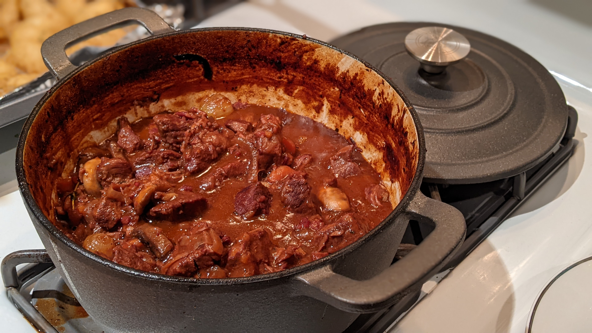
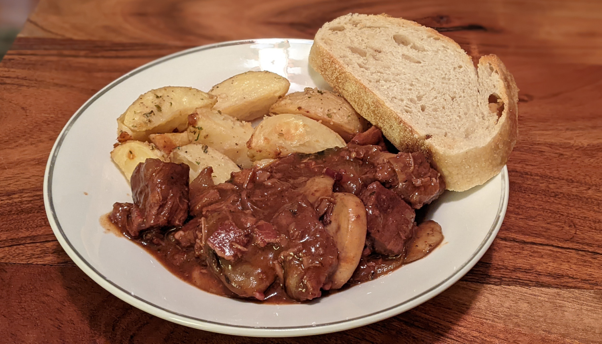

Beef Bourguignon

Author: Julia Child |
Cooked: January 15, 2022
Yields: 6 Servings | Prep Time: 45 Minutes | Cook Time: 6 Hours
Ingredients
- 6 slices bacon, cut into lardons
- 3 1/2 Tbs extra-virgin olive oil
- 3 lbs stewing beef, cut into 2-inch chunks
- 1 large carrot, sliced
- 1 large white onion, sliced
- 1 pinch coarse salt and freshly ground pepper
- 2 Tbs all purpose flour
- 2 cups red wine, line a chianti
- 2 14.5 oz cans beef broth
- 1 Tbs tomato paste
- 2 cloves smashed garlic
- 1/2 tsp thyme
- 1 crumbled bay leaf
- 18-24 small pearl onions
- 3 1/2 Tbs butter
- 1 herb bouquet (4 sprigs parsley, 2 sprigs thyme, 1 bay leaf)
- 1 lb fresh white mushrooms, quartered
Directions
- Simmer bacon lardons in 4 cups water for 10 minutes (Lardon is the French culinary term referring to thin strips of bacon, cut approximately 1/4-inch thick). Drain and pat dry.
- Preheat oven to 450°F. In a large Dutch oven, sauté the bacon in 1 tablespoon of oil for about 3 minutes, until it starts to lightly brown. Remove with a slotted spoon and set aside.
- Dry the beef with a few paper towels for better browning. In batches, sear the beef on all sides in the Dutch oven. Set aside with the bacon.
- Back in the pot, add the sliced carrots and onions; sauté in fat until browned, about 3 minutes. If there's any excess fat, drain it now.
- Add the bacon and beef back to the pot. Season with 1/2 teaspoon coarse salt and 1/4 teaspoon ground pepper. Toss. Sprinkle with flour and toss once more. Place in the center of the oven for 4 minutes.
- Remove pot from oven; toss beef and place back in the oven for 4 more minutes. Remove the pot from the oven and reduce the heat to 325°F.
- To the pot, add the wine and just enough beef broth such that the meat and vegetables are barely covered. Add the tomato paste, garlic and thyme. Bring to a light simmer on the stove, then cover and simmer in the lower part of the oven for 3 to 4 hours, or until the meat is easily pierced.
- In the last hour of cooking, bring 1 1/2 tablespoons butter and 2 teaspoons oil to a medium heat in a sauté pan. Add the pearl onions and toss around in the fat until they've browned, 10 minutes. Then stir in 1/2 cup beef broth, a small pinch of salt and pepper and the herb bouquet. Reduce the heat to low and simmer the onions for about 40 minutes, until the liquid has evaporated, and the onions are tender.
- Remove the onions and set aside. Discard the herb bouquet and wipe out the skillet. Add the remaining butter and oil and bring to a medium heat.
- Add the mushrooms and cook for about 5 minutes, shaking the pan to coat with the butter.
- Place a colander over a large pot. Drain the beef stew through the colander and into the pot. Place the pot with the sauce over a medium heat and simmer for about 5 minutes, skimming any fat on top. Pour the beef and vegetables back into the Dutch oven. Add the pearl onions and mushrooms to the pot. Pour the sauce over the beef mix and simmer an additional 3 to 5 minutes.

Additional Notes
- We served this with roasted potatoes and toasted roasted garlic sourdough. I've been told by my French labmate that this would also pair well with rice or pasta.